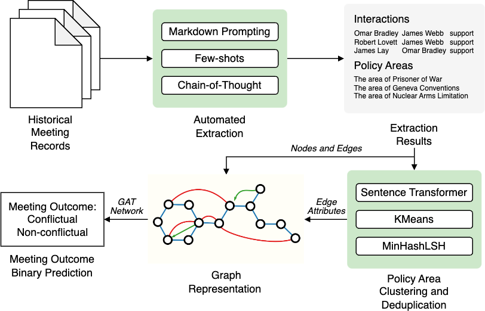
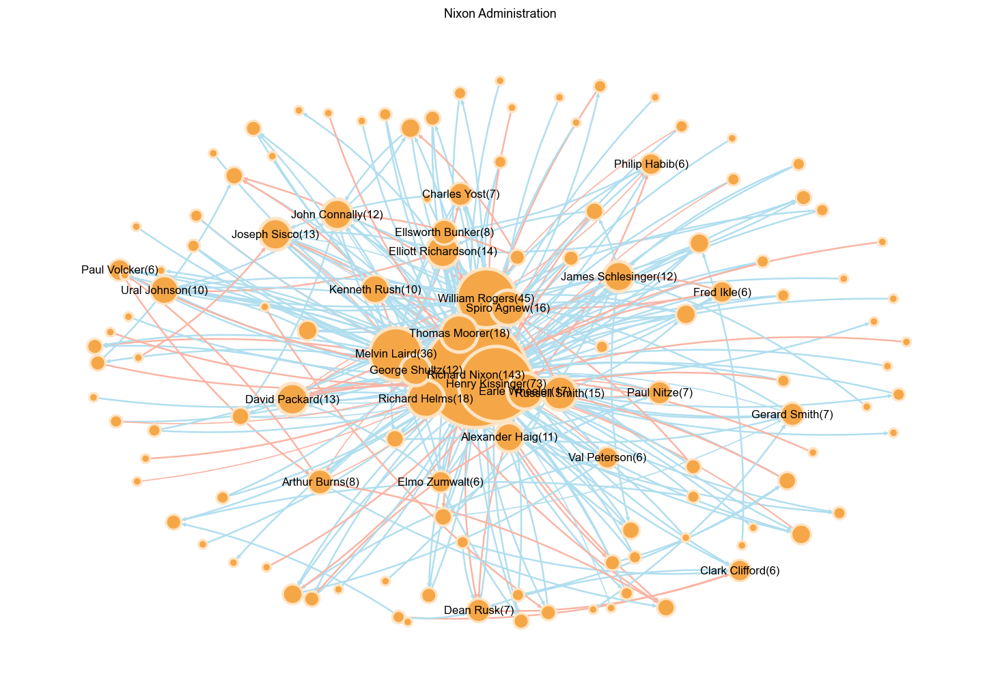

Introduction
Why advisers matter ▸ Foreign-policy scholarship increasingly recognises that outcomes emerge from collective deliberation , not a single leader’s will.
Puzzle ▸ Do patterns of agreement (+) and dissent (–) history amongst meeting participants signal whether the group will endorse a conflictual course of action?
Contribution ▸ We transform Cold-War transcripts into signed interaction graphs and train a Graph Attention Network that forecasts conflict with F1 = 0.87 , surpassing tree-based baselines.
Contribution ▸ Network structure—who sides with whom—encodes latent power and predicts decisions even when identifying information is removed.
Data & Methodology
- 2 685 declassified meetings (1945‑89) → 104 k speech acts
- ChatGPT tags participants, proposals, support, objections, and policy domains
- Nodes represent individual advisors or officials involved in the discussion, while Edges capture the number of previous agreements or disagreements on policy proposals.
Results
To predict whether a meeting would result in a conflictual policy decision , we constructed administration-specific interaction networks and applied a 2-layer Graph Attention Network (GAT) . Node features included learnable embeddings and departmental affiliations, while edges encoded policy-related agreement and disagreement. For each meeting subgraph, we pooled the node embeddings and concatenated them with meeting-level features (e.g., number of departments represented, mean hawkishness), which were then passed into a linear layer to produce binary outcome predictions.
| Model | F1 | Accuracy |
|---|---|---|
| GAT + Metadata | 0.8696 | 0.8734 |
| GAT (structure-only) | 0.8566 | 0.8603 |
| Random Forest (metadata) | 0.8527 | 0.8659 |
The GAT + Metadata model achieved the highest performance, with an F1 score of 0.8696 and an accuracy of 0.8734 , outperforming both the structure-only GAT and the metadata-only Random Forest baseline. Incorporating speech-derived edge weights contributed a notable 1.41 percentage point gain in F1 over the structure-only variant, confirming the added predictive value of interaction dynamics in foreign policy decision-making.
Ablation Study
| Removed | Δ F1 (pp) |
|---|---|
| Meeting metadata | -1.45 |
| Policy-area edge weights | -0.99 |
| Agreement/disagreement patterns | -1.42 |
| Departmental affiliations | -0.82 |
The largest drop upon excluding meeting metadata (‑1.45 pp) highlights the critical role of contextual features, while edge weights and interaction patterns also contribute substantially.
Discussion
Our results underscore that relational dynamics among advisors—beyond individual predispositions—are key drivers of foreign-policy outcomes. The strong performance of the GAT structure-only variant (F1 = 0.8573) confirms that interaction topology alone carries significant predictive signal.
The full model’s gains from metadata fusion (1.23 pp F1 improvement) align with literature showing that department affiliation and hawkishness modulate decision paths (Schub, 2022; Jost et al., 2024). Yet the additional uplift from edge weights (0.99 pp) emphasizes the nuanced power of dissent and support patterns in tipping decisions toward conflict.
Limitations include potential transcription biases and the US-centric archive. Future cross-national extensions and real-time social-media–based networks could address these and broaden applicability.
Future Work
- Temporal GNNs for dynamic evolution of advisor networks.
- Cross-national archives (Soviet, UK) to validate generality.
- Real-time analysis via social-media and news feeds.